Pre-eclampsia Reddit Data Analysis Report
Executive Summary
2,022
Total Posts
19,887
Total Comments
17
Subreddits
-0.007
Avg Sentiment
Data Collection Period
Start Date: 2012-06-04
End Date: 2025-11-30
Years Covered: 14 years
Sentiment Distribution
Overall sentiment breakdown across all posts and comments:
| Sentiment | Count | Percentage |
|---|---|---|
| positive | 947 | 46.8% |
| neutral | 89 | 4.4% |
| negative | 986 | 48.8% |
Top Subreddits by Post Volume
| Rank | Subreddit | Posts | Percentage |
|---|---|---|---|
| 1 | r/preeclampsia | 1,106 | 54.7% |
| 2 | r/AskDocs | 231 | 11.4% |
| 3 | r/BabyBumps | 211 | 10.4% |
| 4 | r/NICUparents | 159 | 7.9% |
| 5 | r/highriskpregnancy | 133 | 6.6% |
| 6 | r/NICUParents | 94 | 4.6% |
| 7 | r/pregnant | 24 | 1.2% |
| 8 | r/beyondthebump | 18 | 0.9% |
| 9 | r/GestationalDiabetes | 18 | 0.9% |
| 10 | r/ObGyn | 11 | 0.5% |
Analysis Visualizations
Temporal Trends
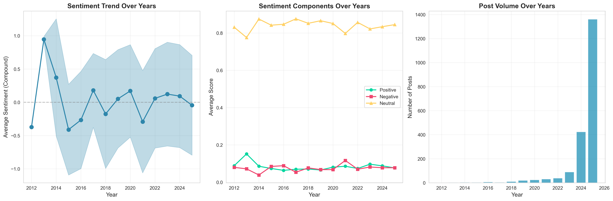
Sentiment Trends Over Years
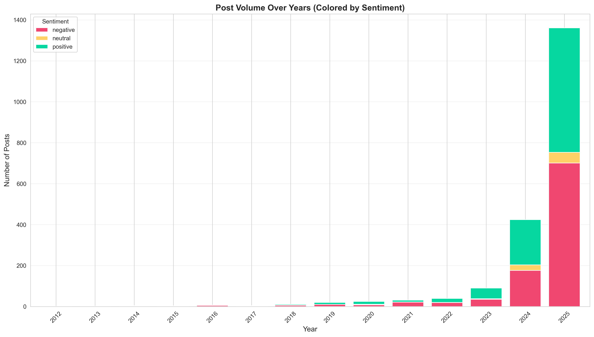
Post Volume by Sentiment
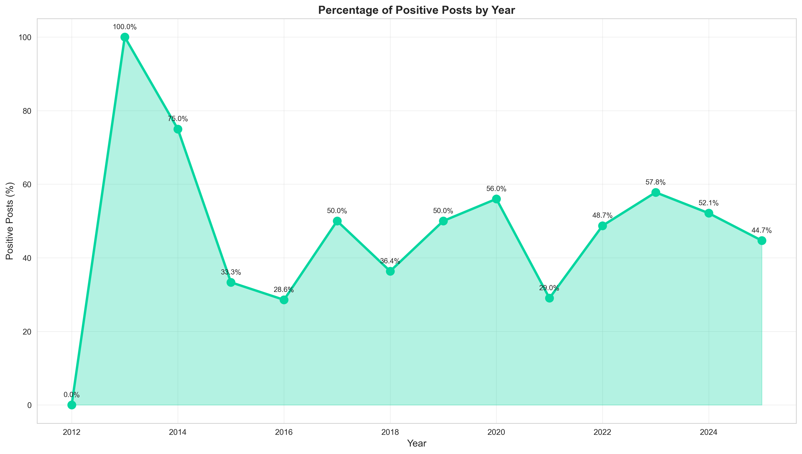
Positive Posts Percentage by Year
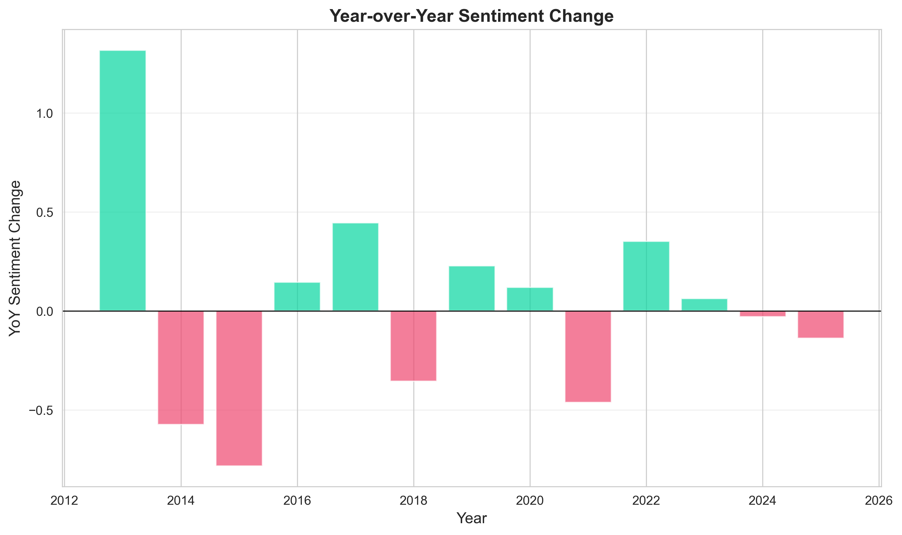
Year-over-Year Sentiment Change

Word Clouds by Year
COVID-19 Comparison
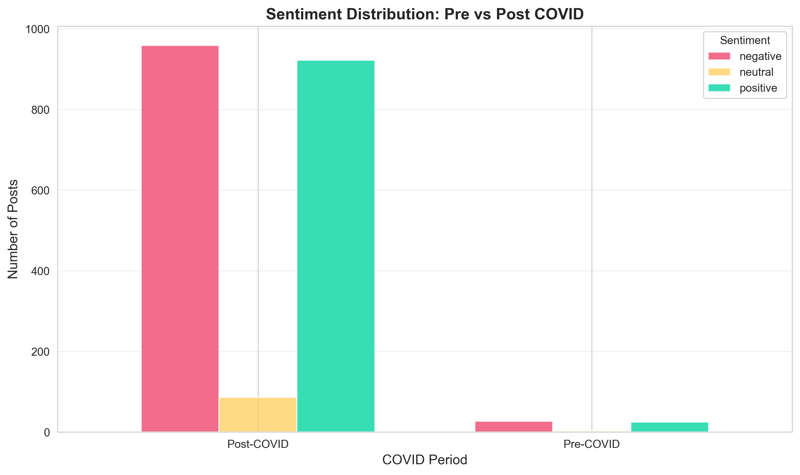
Sentiment Distribution: Pre vs Post COVID
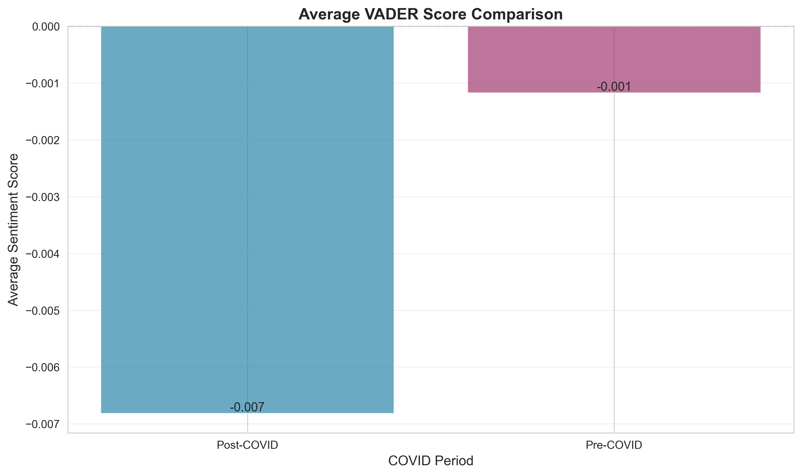
VADER Score Comparison
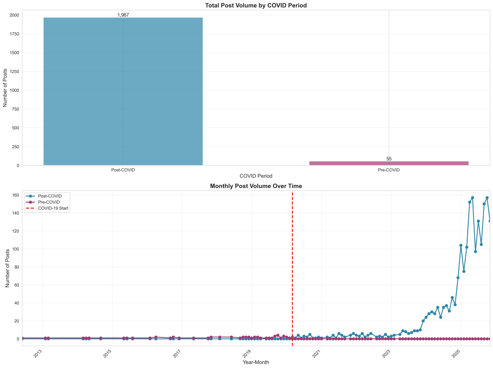
Post Volume Comparison
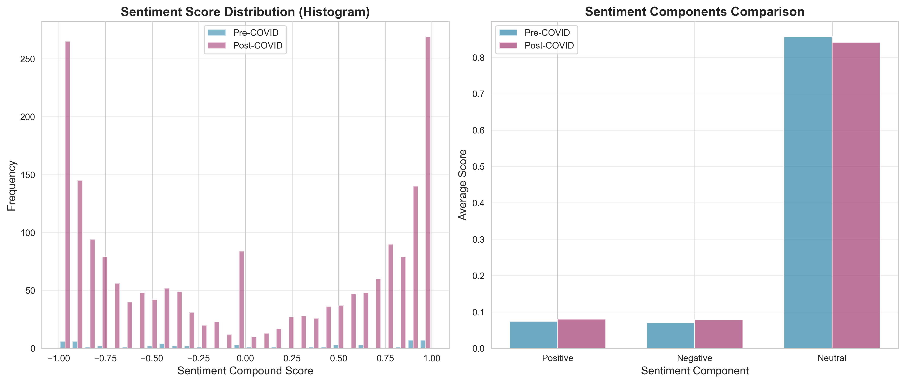
Detailed Sentiment Score Distributions
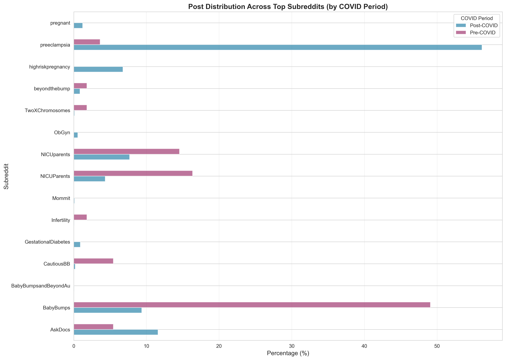
Subreddit Distribution Comparison
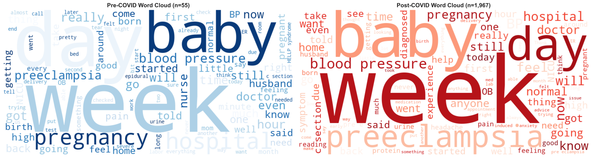
Word Cloud Comparison
Overall EDA
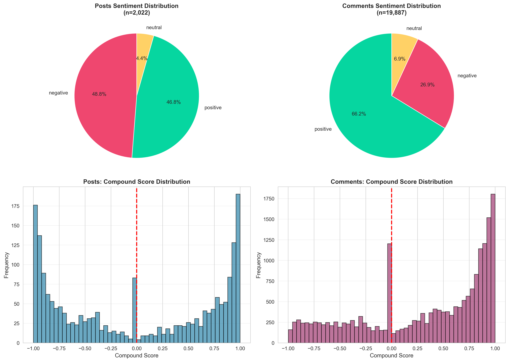
Overall Sentiment Distribution
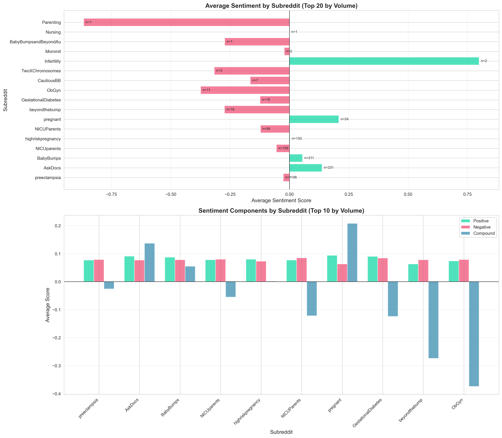
Sentiment by Subreddit
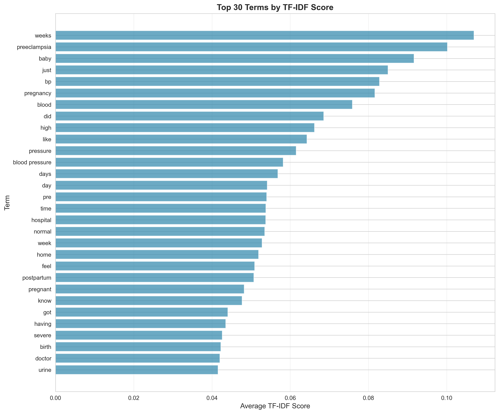
Top TF-IDF Terms

Topic Modeling Results
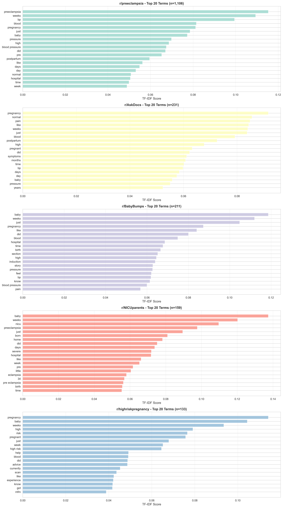
Subreddit TF-IDF Comparison
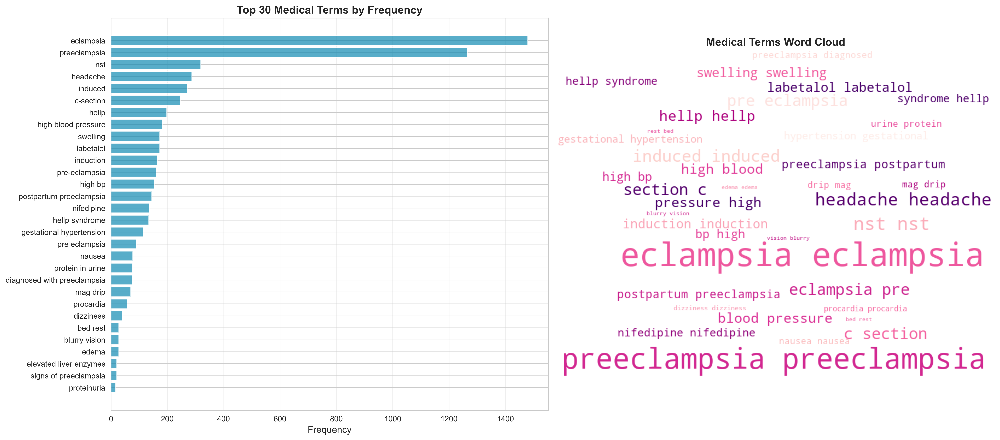
Medical Terms Analysis
Key Findings
- Overall sentiment is negative with an average compound score of -0.007
- Post volume increased by 3476.4% after COVID-19 pandemic
- Most active subreddit: r/preeclampsia
Methodology
This analysis was performed using the following techniques:
- Data Collection: Reddit posts and comments from 23 pregnancy and health-related subreddits
- Text Cleaning: Removal of URLs, special characters, and normalization of text
- Sentiment Analysis: VADER (Valence Aware Dictionary and sEntiment Reasoner) for social media text
- TF-IDF: Term Frequency-Inverse Document Frequency for keyword extraction
- Topic Modeling: Latent Dirichlet Allocation (LDA) for discovering themes
- Statistical Testing: T-tests for comparing pre/post COVID sentiment differences
Files Generated
cleaned_data/cleaned_posts.csv- Cleaned posts datasetcleaned_data/cleaned_comments.csv- Cleaned comments datasetcleaned_data/posts_with_sentiment.csv- Posts with sentiment scoresanalysis_output/overall/sentiment_by_subreddit.csv- Sentiment statistics by subredditanalysis_output/overall/tfidf_scores.csv- TF-IDF term scoresanalysis_output/overall/medical_terms_frequency.csv- Medical terms frequency